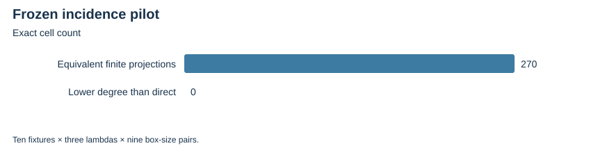

TWIST ROUTES 1–3 · E30 · 2026-10-23 · LOCAL BOUNDED EVIDENCE
A new pilot uses all ten original ordinary fixtures, lambda=1,2,3 and coordinate-box widths h,k=2,4,8. It interpolates a Boolean curve/twist-lifting mask, records actual extension witnesses and compares an ordinary mask for the exact same projected base.
All 270 complete finite grids pass native checks and independent PARI replay. Zero cells lower the maximum generator degree relative to direct membership. Every projected set has an ordinary mask using no twist membership after the base has been constructed. No box offsets or replacement fixtures are searched.
| Recorded inventory | Count |
|---|---|
| Frozen cells | 270 |
| Native/CAS-equivalent projected sets | 270 |
| Twist degree below direct membership | 0 |
| Ordinary degree below twist degree | 0 |

Complete Gröbner bases, decomposition/lifting costs and comparisons with generic ordinary incidence encodings remain unimplemented. This elementary interpolation construction carries no novelty claim.
Verified locally on the same host; complete raw publication is pending artifact-store access. No calibrated speedup, novelty, independent-host replay or NIST DLP is claimed. Original acceptance criteria remain open.
Rust 1.90.0, PARI/GP 2.17.2, one worker except the three-cell E25 orchestration; isolation L0. Caps and limits are in each source-frozen protocol and receipt. Counts are exact finite records; no wall time is admitted. Stochastic uncertainty is not inferred from repeated configurations or targets.
| Receipt / phase | UTC start | Exit | Source pin |
|---|---|---|---|
| incidence-20261023-v1-adjudication.json | 2026-10-23T17:16:04Z | 0 | a18fa3e69054 |
| incidence-20261023-v1-gp.json | 2026-10-23T17:16:04Z | 0 | a18fa3e69054 |
| incidence-20261023-v1.json | 2026-10-23T17:08:13Z | 0 | 644f1dbef70c |
Native assessment: ../../execution-v2/assessment-20261023-v3/ASSESSMENT.json. Raw members: runs/incidence-20261023-v1 and its accepted independent replay. Source/input/binary hashes and exact argv: E30-receipts.json and ../../execution-v2/receipts/.